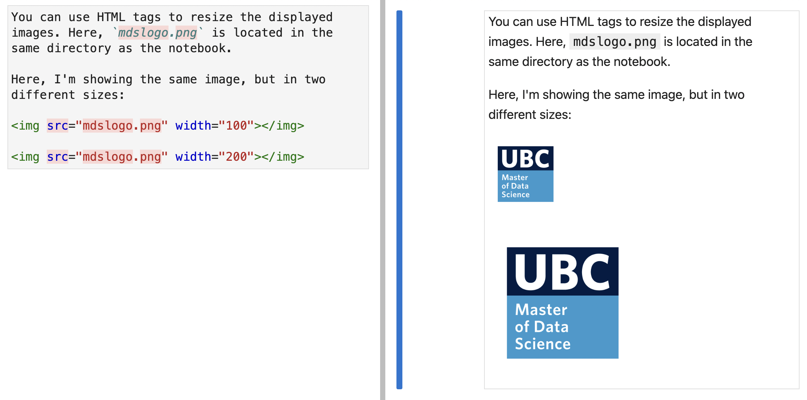
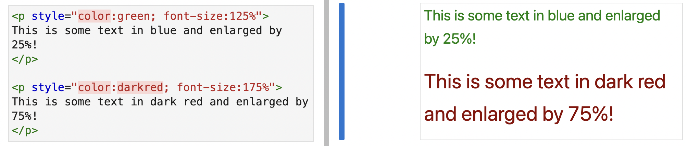

What is Markdown?
Logo source
Markdown is a fast and easy way to format plain text.
Most important features:
Markdown is supported on various platforms, including GitHub (remember README.md files?) and even Google Doc!
Pro tip 1: Change image size
You can use the following HTML tag to change the displayed size of an image:
<img src="<PATH_TO_FILE>" width="400px"></img>

Pro tip 2: Change text size & color
You can also use the following HTML tag to change the size and color of a piece of text:
<p style="color:black; font-size:120%">
Some text you want to show in a different color or size
</p>
